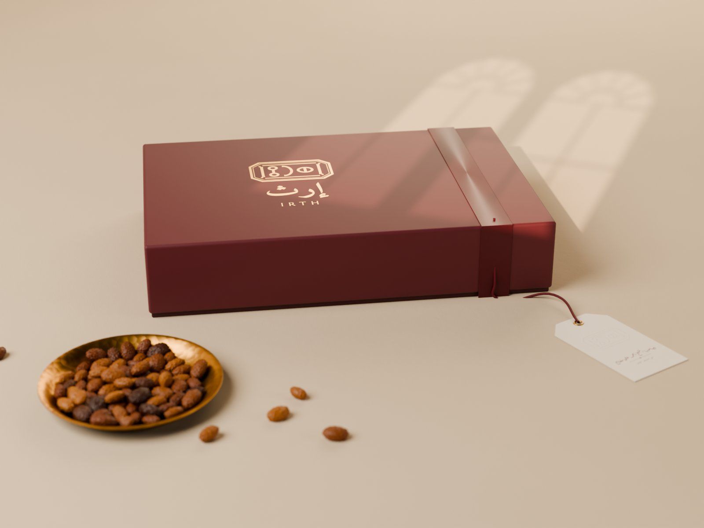

حزمة التطوير ١ما أضفته إلى التصميمIRTH · BRAND BOOK
ما أضفته إلى التصميم
لم يُغيَّر شيء من الهوية المعتمدة. أُضيفت إليها ثلاث طبقات تنقلها من الورق إلى الواقع، وكلها مبنية على ملفات الشعار والرسوم الأصلية نفسها.

صور واقعية
مشاهد مبنية ومضاءة كما في استوديو تصوير المنتجات: الورق والخيش والشمع والنحاس تتصرّف أمام الضوء كما في الواقع. والشعار في كل صورة هو ملف الشعار المتجهي نفسه، فلا تشوّه في الختم ولا في الحروف.

ثلاثة اتجاهات للشعار
الختم باقٍ في الثلاثة: ختمٌ موحّد باسم مرسوم له، وختمٌ تحت قمرية صنعانية، ونقش الشَّرعة الذي يكسو العبوات. تختار منها ما يناسب، أو تجمع بين اثنين.

الشعار المتحرك
الختم يظهر أكبر قليلاً ثم يُضغط في مكانه، ويتبعه الاسم، كما في مواصفة ١٠٫٨. ثلاث ثوانٍ ونصف، بصيغة فيديو للحسابات وصورة متحركة للرسائل.
توقيع التصوير
في كل صورة يدخل ضوء الشمس من نافذة صنعانية بقمريتها، فيرتسم ظلّها في المشهد. توقيع بصري ثابت يعرف به الناظر صور إرث قبل أن يقرأ اسمها.
إعداد وتصميم: م/ أحمد درهم حسين الفقيه — الشريك المؤسس ومدير المشروعU1